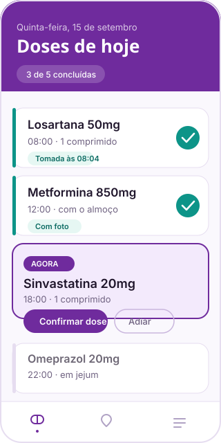

Qual é o problema
A adesão ao tratamento cai conforme o número de medicamentos aumenta. Dose esquecida, dose repetida e horário trocado são rotina para quem toma quatro ou mais remédios por dia.
Cuidado que aproxima
Organize medicamentos, conecte sua rede de cuidado e acompanhe a rotina. Um aplicativo pensado para quem cuida e para quem é cuidado.

Sobre o projeto
O Oldion é um sistema de acompanhamento de medicamentos e rotina para pessoas idosas, composto por um aplicativo mobile e uma API própria. Nasceu como projeto acadêmico de Programação Web III e evoluiu para um sistema funcional ponta a ponta: cadastro, vínculo entre cuidador e idoso, prescrições, registro de doses e recursos nativos do aparelho.
Idoso e cuidador têm contas próprias, ligadas por um convite. Cada um vê o que precisa ver.
GPS, câmera, acelerômetro e agenda — usados para resolver problemas concretos do cuidado.
Doses, quedas e localizações ficam salvas no aparelho e continuam acessíveis offline.
Texto grande, contraste alto e modo escuro como preferências guardadas no aparelho.
O problema
A adesão ao tratamento cai conforme o número de medicamentos aumenta. Dose esquecida, dose repetida e horário trocado são rotina para quem toma quatro ou mais remédios por dia.
O controle é feito de cabeça, em caderno ou em caixinha semanal. Nenhum deles registra o que foi realmente tomado, e nenhum avisa quem está de fora.
A pessoa idosa, que perde a continuidade do tratamento; e o familiar ou cuidador, que só descobre o que aconteceu ligando e perguntando.
E quando acontece uma queda ou uma emergência, o aviso depende de alguém estar por perto.
A solução
Remédio, dose e horários. O app gera automaticamente as ocorrências de cada dia.
Um toque para confirmar ou ignorar, com foto opcional pela câmera como comprovação.
O cuidador vinculado vê o histórico de doses, a localização e os alertas de queda.
Cada etapa responde diretamente a um ponto do problema: o registro substitui a memória, o histórico compartilhado substitui a ligação de checagem, e a detecção de queda substitui a sorte de ter alguém por perto.
Público-alvo
Quem quer autonomia na própria rotina, sem depender de alguém para lembrar. Texto grande, toque simples e funcionamento sem internet.
Quem precisa acompanhar à distância sem vigiar. Histórico de doses, localização quando necessário e alerta automático de queda.
Funcionalidades
Cadastro de remédios com horários e geração automática das doses do dia.
Registro de dose tomada ou ignorada, com foto opcional pela câmera.
O cuidador convida o idoso por e-mail ou direto pela agenda do telefone.
GPS com indicador de confiabilidade da leitura, para saber o quanto confiar no ponto.
O acelerômetro identifica impacto forte e bloqueia confirmações durante instabilidade.
Doses, quedas e localizações ficam no aparelho e continuam disponíveis sem internet.
Preferências de acessibilidade salvas no próprio aparelho, aplicadas em todas as telas.
Senha criptografada, sessão por token e validação de todos os dados enviados à API.
Equipe
Tecnologias
O código do aplicativo e da API está aberto no GitHub. Para dúvidas, parcerias ou sugestões, fale com a equipe.